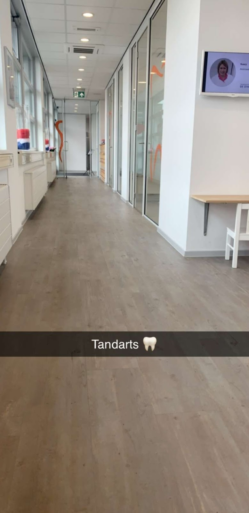

Tandarts in Arnhem
Ruim de tijd voor uw gebit.
Een moderne algemene praktijk waar u zich op uw gemak voelt. Wij nemen de tijd voor controles en behandelingen, leggen uit wat we doen en waarom, en zijn goed ingespeeld op angstige patiënten en kinderen.
Telefonisch bereikbaar maandag tot en met donderdag van 08:00 tot 12:00.

Valckenierstraat 9
6828 RM Arnhem, rolstoeltoegankelijk
Pijn of een ongeluk buiten openingstijden?
Bij een ongeval, een nabloeding of ernstige pijn helpt de spoedpraktijk Dental365 u 's avonds en in het weekend. De dienstdoende tandarts stelt een paar gerichte vragen en beoordeelt of direct ingrijpen nodig is.
Geen gehoor? Bel de dokterspost op 0900 1515. Voor alles wat niet acuut is, maakt u een afspraak tijdens onze openingstijden. Meer informatie op dental365.nl.
Van controle tot kroon, in één praktijk.
Bij een controle kijken we naar de gezondheid van uw tandvlees en controleren we uw tanden en kiezen op gaatjes. Om zwakke plekken tussen de kiezen op tijd te zien, maken we iedere twee tot drie jaar een set foto's (bite-wings). Een beetje tandsteen halen we meteen weg; is het veel, dan plannen we daar een aparte afspraak voor.
Vinden we iets, dan bespreken we dat eerst met u en plannen we samen een passende behandeling.
- Controle en reinigingGebit en tandvlees nakijken, tandsteen verwijderen
- Kroon- en brugwerkHerstel van beschadigde of ontbrekende tanden
- WortelkanaalbehandelingOm een ontstoken tand of kies te behouden
- Frames en prothesesUitneembare voorzieningen
- ImplantologieSuprastructuren op implantaten
- Kleine kaakchirurgieBijvoorbeeld het verwijderen van een kies
Wij werken met de nieuwste technieken en apparatuur, en ons team volgt veel bij- en nascholing.
Een vast team dat u kent.
Tandarts
Daan Masseur
Assistenten
Nancy, Adele en Margreet
- Angstig of met kinderen? Daar zijn wij goed op ingespeeld. We nemen de tijd en leggen alles rustig uit.
- Rolstoeltoegankelijk. De hele praktijk is goed bereikbaar.
- Erkend leerbedrijf. Wij leiden assistentes op.
- Aangesloten bij de KNMT. De Koninklijke Nederlandse Maatschappij tot bevordering der Tandheelkunde.
Wat patiënten zeggen
Google: 4,1 uit 23 reviews
"Een hele fijne kundige tandarts. Ik word al ruim 10 jaar geholpen door Tandarts Daan en ik heb er op niks aan te merken. Hij denkt met je mee qua kosten, luistert naar je verhaal en bovenal; hij krijgt je aan het lachen. Supertandarts"
"Kom hier al jaren. Altijd professioneel en kundig behandeld. Geen onnodige behandelingen, goede uitleg."
"Kom er sinds 2019, altijd goed geholpen en ze zorgen voor je gebit alsof het hun eigen is."
Tarieven en betaling
De tarieven voor tandheelkunde zijn in Nederland vastgesteld door de NZa. Ook onze behandelingen rekenen we volgens die lijst. Voor tandtechniek werken we meestal met Verhoef Tandtechniek in Huissen.
Omdat we vrije artsenkeuze belangrijk vinden, hebben we geen contracten met zorgverzekeraars.
- Pinnen aan de balie
- U krijgt de nota direct mee.
- Factuur per e-mail
- Via een extern incassobureau, mogelijk met een aanvullende tandartsverzekering en na hun goedkeuring.
- Afspraak verzetten
- Tot 48 uur van tevoren annuleert u kosteloos.
- Vragen over de rekening
- Bel 026 213 6200 of mail de praktijk.
Openingstijden
| Ochtend | Middag | |
|---|---|---|
| Maandag | 08:00-12:30 | 13:30-17:00 |
| Dinsdag | 08:00-12:30 | 13:30-17:00 |
| Woensdag | 09:00-12:30 | 13:30-18:00 |
| Donderdag | 08:00-12:30 | 13:30-17:00 |
| 1e vrijdag van de maand | 09:00-12:30 | 13:00-15:00 |
Voor afspraken en vragen zijn we telefonisch bereikbaar van maandag tot en met donderdag, 08:00 tot 12:00. Daarbuiten alleen voor spoed of het wijzigen van een afspraak voor vandaag of morgen. Kijk bij pijn buiten openingstijden bij spoed.